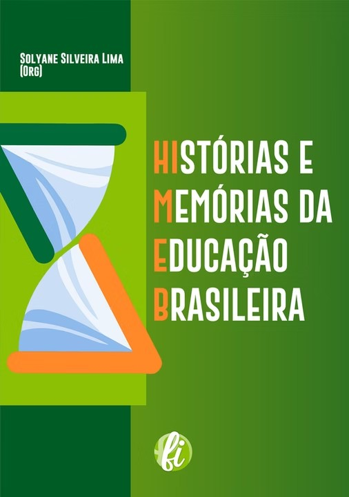

Histórias e memórias da educação brasileira
Livro organizado por Solyane com a produção dos integrantes do grupo de pesquisa HIMEB e selecionado pela docente como representativo de sua trajetória na UFRB.
Memorial 20 anos · Perfil docente
História da Educação e Didática
Trajetória no curso
Solyane Silveira Lima é docente efetiva do Curso de História da UFRB desde 2015, com atuação nas áreas de História da Educação e Didática. Em sua trajetória no curso, registra atividades como professora e pesquisadora e a atuação como coordenadora de área em 2019.
Produção intelectual

Livro organizado por Solyane com a produção dos integrantes do grupo de pesquisa HIMEB e selecionado pela docente como representativo de sua trajetória na UFRB.
Pesquisa e extensão
Projeto de pesquisa desenvolvido no Centro de Artes, Humanidades e Letras entre 2016 e 2020.
Atividade de extensão realizada no Centro de Artes, Humanidades e Letras em agosto de 2018.
Segunda edição do seminário, realizada no Centro de Artes, Humanidades e Letras em 2025.
Vida docente
Registro de aula de campo realizada na Igreja de Belém da Cachoeira.
Encerramento das atividades do semestre com a turma de Estágio Supervisionado I.
Aula prática de Didática realizada no LEHRB.
Acervo em construção